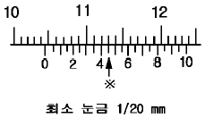
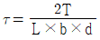
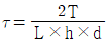
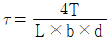
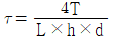
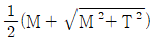
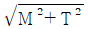
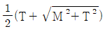
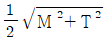
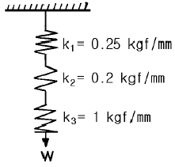

농업기계산업기사 (2002-09-08 기출문제)
1과목: 농업기계공작법
1. 줄눈의 절삭 칩을 강철 솔로 제거할 때 어느 방향으로 솔질하는 것이 가장 좋은가?
- 줄의 길이 방향으로
- 줄의 눈금 방향으로
- 줄의 나비 방향으로
- 줄의 면에 원을 그리며
(정답률: 77%)

2. 다음 버어니어 캘리퍼스의 아들자와 어미자 눈금의 일치점이 ※이면 몇 ㎜ 인가?

- 100.45
- 104.45
- 112.45
- 113.45
(정답률: 90%)
3. 연삭 숫돌차의 표시법 WA 46 H m 에서 기호 H 는 무엇을 표시하는가?
- 입도
- 숫돌재료
- 조직
- 결합도
(정답률: 72%)
4. 연삭기 숫돌의 외경이 200㎜이고, 회전수가 3000rpm 이면 숫돌의 원주속도는 몇 m/min 인가?
- 1885
- 2556
- 2775
- 2885
(정답률: 78%)
5. 드릴링 작업에서 접시나사 머리부분을 묻히게 하기 위하여 원뿔자리를 파는 작업을 무엇이라고 하는가?
- 카운터 싱킹
- 카운터 보링
- 리밍(reaming)
- 스폿 페이싱
(정답률: 83%)
6. 금형의 공간부에 용융금속을 주입 가압하여 트랜스 미션 케이스등과 같은 경합금 주물를 만드는 주조법을 무엇이라고 하는가?
- 원심 주조법
- 인베스트먼트 주조법
- 다이 캐스팅
- 폭발 주조법
(정답률: 70%)
7. 목형을 주형에서 뺄 때 주형의 파손을 고려하여 목형의 측면을 경사지게 만드는 것과 가장 관계가 깊은 것은?
- 덧붙임
- 목형구배
- 라운딩
- 가공여유
(정답률: 86%)
8. 리벳으로 접합한 판금의 경계부를 유체 등이 누설되지 않게 때려서 밀착시키는 작업을 무엇이라고 하는가?
- 비딩(beading)
- 벌징(bulging)
- 코킹(caulking)
- 드로잉(drawing)
(정답률: 76%)
9. 경운기 로터리의 회전수를 측정하려 할 때, 다음 중 가장 적합한 계측기는?
- 사인바(sine bar)
- 타코미터(taco meter)
- 마이크로미터(micro meter)
- 콘 페네트로미터(cone penetro meter)
(정답률: 75%)
10. 콘넥팅 로드와 같이 반복적인 하중을 받는 재료인 경우 다음 중 가장 중요한 시험은?
- 경도 시험
- 충격 시험
- 비파괴 시험
- 피로 시험
(정답률: 92%)
11. 숫나사를 가공할 때 사용하는 수공구인 것은?
- 탭
- 트로멜
- 리머
- 다이스
(정답률: 87%)
12. 선반작업에서 면판과 더불어 센터작업에 가공물 고정을 위해 사용하는 선반의 부속품은?
- 척
- 돌리개
- 심봉
- 방진구
(정답률: 64%)
13. 전해연마의 특징으로 틀린 것은?
- 가공면에 가공성이 없다.
- 복잡한 형상의 연마도 가능하다.
- 내마멸성과 내부식성이 좋아진다.
- 철금속 가공이 더욱 효과적이다.
(정답률: 55%)
14. 지름이 100mm, 커터의 날수가 12인 초경합금 밀링 커터로 길이가 200mm인 탄소강을 절삭하려고 한다. 절삭날 1개의 이송을 0.2mm 라면 1회 절삭시간은 몇 분이 걸리는가? (단, 절삭속도 V = 25 m/min 이다.)
- 1.04
- 2.04
- 3.04
- 4.04
(정답률: 46%)
15. 연삭작업에서 숫돌의 균형이 맞지 않거나 숫돌의 형상이 변화된 것을 바르게 고치는 가공은?
- 드레싱(dressing)
- 로우딩(loading)
- 글레이징(glazing)
- 트루잉(truing)
(정답률: 62%)
16. 다음 가공법 중 구멍의 내면을 가장 정밀하게 다듬는 공작법은?
- 드릴링
- 밀링
- 리밍
- 호닝
(정답률: 58%)
17. 절삭가공에서 절삭제에 대한 설명 중 틀린 것은?
- 칩의 제거작용을 하여 절삭작업이 용이하게 한다.
- 가공물의 온도를 상승시켜 가공을 쉽도록 한다.
- 공구인선을 냉각시켜 공구의 경도 저하를 방지한다.
- 윤활 및 방청작용으로 가공표면을 양호하게 한다.
(정답률: 88%)
18. 구멍용 한계 게이지의 종류가 아닌 것은?
- 링 게이지(ring gauge)
- 봉 게이지(bar gauge)
- 테이퍼 게이지(taper gauge)
- 평 플러그 게이지(flat plug gauge)
(정답률: 70%)
19. 길이를 측정하는 공학상의 측정 표준온도는?
- 0℃
- 10℃
- 20℃
- 30℃
(정답률: 82%)
20. 강을 A3 변태점 이상으로 가열한 후 서서히 냉각시킴으로써 강의 조직을 미세화하고 내부응력을 제거하는 열처리 방법은?
- 담금질(Quenching)
- 뜨임(Tempering)
- 불림(Normalizing)
- 풀림(Annealing)
(정답률: 77%)
2과목: 농업기계요소
21. 약 1000 kgf-m 의 비틀림 모멘트 만을 받는 중실원축의 지름으로 다음 중 몇 mm 가 가장 적합한가? (단, 축의 허용 비틀림응력은 τa = 3.8 kgf/mm2 이다.)
- 90
- 100
- 110
- 120
(정답률: 42%)
22. 수 나사의 호칭(공칭)지름은 무엇으로 표시하는가?
- 바깥지름
- 골지름
- 안지름
- 유효지름
(정답률: 68%)
23. 전달동력 1.5PS, 회전수 320rpm, 축의 지름 32mm, 보스의 길이 40mm, 허용전단응력 1.8kgf/mm2 일 때 키의 폭은 몇 mm 인가? (단, 키의 길이는 보스의 길이와 같다.)
- 2.5
- 2.7
- 2.9
- 3.1
(정답률: 28%)
24. 축지름 d, 키의 폭 b, 키가 전달시키는 비틀림 모멘트 T, 키의 유효길이 L, 키의 높이 h 라고 할 때, 키에 생기는 전단응력을 구하는 식은?




(정답률: 52%)
25. 기계의 배관설비에서 유체를 일정방향으로 만 흐르게 하는 밸브는?
- 감압 밸브
- 클로브 밸브
- 슬루스 밸브
- 체크 밸브
(정답률: 80%)
26. 직경이 각각 1200mm, 400mm이고 중심거리가 4000mm 인 두 풀리를 바로걸기로 감을 때 벨트의 길이는 약 몇 mm인가?
- 10147
- 10673
- 1⑤93
- 1⑤53
(정답률: 41%)
27. 경운기 로타리는 체인에 의하여 PTO축에서 로타리 축으로 동력을 전달하고 있다. 체인 전동의 장점으로 틀린 것은?
- 초기 장력이 불필요 하다.
- 큰동력을 전달할 수 있다.
- 고속도 전동에 적합하다.
- 습기, 열에 의한 영향이 적다.
(정답률: 78%)
28. 일반적인 너트의 풀림을 방지하는 방법이 아닌 것은?
- 나비너트 사용
- 스프링 와셔(washer) 사용
- 분할핀 사용
- 로크 너트(lock-nut) 사용
(정답률: 87%)
29. 베어링 하중이 축에 직각으로 작용할 때 사용하는 구름베어링인 것은?
- 레이디얼 볼 베어링
- 피벗 저널 베어링
- 드러스트 볼 베어링
- 단열 저널 베어링
(정답률: 72%)
30. 사각 나사에서 마찰계수가 μ = 0.1, 유효지름는 24㎜, 피치 3㎜ 일 때 나사의 효율은 약 몇 % 인가?
- 22
- 24
- 26
- 28
(정답률: 34%)
31. 굽힘 모멘트 M 과 비틀림 모멘트 T 가 동시에 작용하는 전동축의 상당 굽힘 모멘트 Me 를 구하는 식은?




(정답률: 61%)
32. V 벨트의 설명 중 틀린 것은?
- KS 규격의 종류로는 A, B, C, D, E, F형의 6종류로 분류한다.
- 벨트길이는 두께의 중앙부를 통과하는 유효 원주길이로 표시한다.
- 호칭번호는 유효 원주길이(mm)를 25.4로 나눈수이다.
- D 14 란 유효 원주 길이가 14 인치를 의미한다.
(정답률: 74%)
33. 일반적인 베어링의 마찰상태가 아닌 것은?
- 고체 마찰
- 유체 마찰
- 경계 마찰
- 기체 마찰
(정답률: 65%)
34. 다음 하중에 관한 설명 중 틀린 것은?
- 정 하중 - 작용하는 위치, 크기, 방향이 일정한 하중
- 동 하중 - 가해지는 속도가 빠르고, 시간에 따라 크기와 방향이 바뀌는 하중
- 반복하중 - 일정한 진폭과 주기를 가지고 반복하면서 작용하는 하중
- 교번하중 - 하중의 작용 위치 및 방향은 일정하나, 크기가 변화하는 하중
(정답률: 75%)
35. 축과 구멍의 헐거운 끼워맞춤에서 최소 틈새란?
- 구멍의 최소 허용치수 - 축의 최대 허용치수
- 구멍의 최대 허용치수 - 축의 최소 허용치수
- 구멍의 최소 허용치수 - 축의 최소 허용치수
- 구멍의 최대 허용치수 - 축의 최대 허용치수
(정답률: 50%)
36. 곧은 막대의 한쪽 끝을 고정하고 다른 한 끝을 비틀 때, 생기는 비틀림 변형을 이용한 스프링은?
- 인장 코일 스프링
- 압축 코일 스프링
- 겹판 스프링
- 토션 바 스프링
(정답률: 69%)
37. 그림과 같이 직렬로 연결된 스프링의 합성 스프링 상수는 몇 kgf/mm 인가?

- 1.45
- 0.69
- 0.1
- 0.⑤
(정답률: 50%)
38. 외접 원통 구동 마찰차의 지름이 200mm 이고 종동 마찰차의 지름이 400mm 이다. 미끄럼이 없을 경우 속도비는?
- 4
- 2
- 1/2
- 1/4
(정답률: 63%)
39. 두 축이 어느 각도로 만날 때, 사용되는 기어의 종류가 아닌 것은?
- 베벨 기어
- 크라운 기어
- 헬리켈 기어
- 마이터 기어
(정답률: 59%)
40. 지름 5cm인 연강봉에 5ton의 인장력이 걸려있을 때 봉에 생기는 인장응력은 약 몇 kgf/cm2 인가?
- 155
- 255
- 355
- 455
(정답률: 56%)
3과목: 농업기계학
41. 경운 작업시 토양에 대하여 일정한 작용 각도를 유지하며 쟁기를 견인하는 쟁기 구성품은?
- 보습(share)
- 지측판(landside)
- 성에(beam)
- 히치(hitch)
(정답률: 63%)
42. 호퍼 밑에 설치된 스피너(spinner) 회전력으로 살포하는 비료살포기는?
- 퇴비 살포기
- 입상비료 살포기
- 분말 시비기
- 액상비료 살포기
(정답률: 64%)
43. 바인더(Binder) 및 콤바인(Combine)의 전처리부 기능이 아닌 것은?
- 작업 폭 결정
- 작물의 줄기 절단
- 예취부분과 미예취부 분리
- 도복된 작물을 일으켜 세움
(정답률: 59%)
44. 이앙작업 중 결주가 발생하는 주요 원인이 아닌 것은?
- 상자의 묘가 균일하게 자라지 않았다.
- 식부 깊이가 적당하지 않다.
- 수심이 적당하지 않다.
- 묘탑재대의 이송 속도가 빠르다.
(정답률: 70%)
45. 이체(plow bottom)의 3요소가 아닌 것은?
- 보습(share)
- 지축판(land side)
- 콜터(coulter)
- 몰드 보드(mould board)
(정답률: 59%)
46. 다음 중 컬티베이터로 작업할 수 없는 작업은?
- 중경작업
- 제초작업
- 배토작업
- 진압작업
(정답률: 64%)
47. 벼의 직파(直播)에 사용되는 기계가 아닌 것은?
- 건답 직파기
- 담수 골뿌림 파종기
- 담수 표면 직파기
- 핔커 휠식 직파기
(정답률: 66%)
48. 건초를 압축· 결속하는 기계는?
- 헤이 베일러
- 사이드 레이크
- 헤이 테더
- 모우어 컨디셔너
(정답률: 80%)
49. 수로에서부터 1000평의 밭에 물을 양수하는데 전양정이 15m이고 양수량이 0.3 m3/min 이라면 다음 중 가장 적합한 펌프종류는?
- 원심펌프
- 축류펌프
- 사류펌프
- 기어펌프
(정답률: 66%)
50. 보통형 콤바인에서 예취부에서 베어진 작물을 탈곡부까지 운반하는 부분은?
- 집취부
- 선별부
- 반송부
- 배출부
(정답률: 60%)
51. 트랙터가 경폭이 90cm인 플라우로 10cm의 깊이를 경운할 때 경운 저항이 2,250kgf가 작용하였다. 경운 비저항은 몇 kgf/㎝2 인가?
- 2.5
- 25
- 225
- 250
(정답률: 38%)
52. 콤바인의 구조 중 탈곡부에 작물의 길이에 따라 공급깊이를 적절한 상태로 유지 시켜주는 것은?
- 공급깊이 장치
- 픽업 장치
- 크랭크 핑거
- 피드 체인
(정답률: 78%)
53. 이앙기 식부깊이 조정방법으로 다음 중 가장 적합한 방법은?
- 변속기어의 변경
- 차륜 클러치의 조절
- 플로트의 상하 조절
- 주간거리 조정
(정답률: 79%)
54. 원판 플라우의 특징 설명으로 틀린 것은?
- 단단한 토양이나 뿌리가 많은 곳에도 적합하다.
- 회전으로 인한 마모가 적다.
- 반전이 불량하다.
- 절단력이 작다.
(정답률: 52%)
55. 플라우 앞쪽에 설치되어 흙을 미리 수직으로 절단하여 보습의 절삭작용을 도와 주는 장치는?
- 앞쟁기
- 쉐어
- 콜터
- 비임
(정답률: 88%)
56. 토출관의 직경이 150㎜이고 관내에서 물의 속도가 2m/sec일 때 양수량은 몇 m3/sec 인가?
- 0.015
- 0.035
- 0.073
- 0.135
(정답률: 34%)
57. 양수량이 2 m3/min, 전양정이 9 m인 경우에 양수작업에 필요한 엔진 마력은 약 몇 PS 인가? (단, 펌프의 효율은 80 %, V 벨트의 전동 효율은 95 %, 엔진의 여유마력 비율은 20 % 로 가정한다.)
- 5.3
- 5.7
- 6.0
- 6.3
(정답률: 22%)
58. 동력 분무기의 공기실이 하는 역할로 가장 중요한 것은?
- 약액에 공기를 공급하여 분무 효과를 높인다.
- 약액의 맥동압력을 일정하게 유지하여 준다.
- 펌프 내로의 공기의 유입을 막는다.
- 분무 압력을 높여 준다.
(정답률: 75%)
59. 동력 분무기 구성요소가 아닌 것은?
- 공기실
- 압력조절장치
- 펌프
- 송풍장치
(정답률: 72%)
60. 사료 절단기의 취급상 주의사항으로 틀린 것은?
- 날의 고정날과 회전날과의 틈새를 조절한다.
- 공급 재료는 균일하지 않아도 된다.
- 날을 잘 갈아서 날카롭게 한다.
- 규정 회전수로 운전한다.
(정답률: 81%)
4과목: 농업동력학
61. 직류 전동기에서 고정자 권선과 전기자 권선이 병렬로 연결되어 있는 것은?
- 분권 전동기
- 직권 전동기
- 복권 전동기
- 단권 전동기
(정답률: 66%)
62. 공기 표준 사이클인 오토 사이클(otto cycle)은 다음 중 어느 사이클에 해당하는가?
- 정압 사이클
- 복합 사이클
- 정적 사이클
- 등압 연소 사이클
(정답률: 72%)
63. 액체 연료 중 증류온도가 가장 낮은 연료는?
- 가솔린
- 등유
- 경유
- 중유
(정답률: 86%)
64. 콘크리트 노면에서 10kN의 수평 견인력을 7km/h로 견인할 때 차축 토크가 15kN.m 이었다. 구동 타이어의 동반경이 50cm일 때, 트랙터의 견인효율은 약 몇 % 인가?
- 11.1
- 33.3
- 55.5
- 77.7
(정답률: 70%)
65. 농용 트랙터의 PT0 는 무슨 장치를 뜻하는가?
- 동력취출장치
- 윤활장치
- 유압장치
- 전기장치
(정답률: 85%)
66. 다음 중 파종 및 이식작업에 가장 적합한 PTO 동력전달방식은?
- 변속기 구동형
- 상서 회전형
- 독립형
- 속도 비례형
(정답률: 60%)
67. 트랙터용 축전지의 각 셀당 기준 전압은?
- 1 V
- 1.5 V
- 2 V
- 2.5 V
(정답률: 74%)
68. 가솔린 기관에 비교한 디젤기관의 장점인 것은?
- 연료분사 장치의 정비가 쉽다.
- 연료 소비량이 적다.
- 소음 및 진동이 적다.
- 시동이 쉽다.
(정답률: 65%)
69. 트랙터 차륜에 휠 웨이트(Wheel weight)를 장착시키는 주된 이유로 가장 적합한 것은?
- 기체의 진동을 줄여 안정하기 위함이다.
- 견인력을 증가시키고 차체의 균형을 유지하기 위함이다.
- 트랙터 타이어를 보호하기 위함이다.
- 물논에서 작업을 용이하게 하기 위함이다.
(정답률: 78%)
70. 앞바퀴를 앞쪽에서 보았을 때 연직면과 차륜 평면이 이루는 각을 무엇이라고 하는가?
- 토우인
- 캠버각
- 캐스터각
- 킹핀 경사각
(정답률: 52%)
71. 가솔린 145cm3을 연소시키기 위하여 필요한 공기의 무게는 약 몇 kg 인가? (단, 가솔린의 비중은 0.74 이고, 공기 연료비(혼합비)는 13 :1 이다)
- 1.4
- 1.6
- 1.7
- 1.72
(정답률: 35%)
72. 4행정 기관이 매분 1500 회전할 때 흡입 및 배기밸브는 각각 몇번씩 열리는가?
- 375
- 750
- 1500
- 3000
(정답률: 72%)
73. 트랙터는 좌, 우 브레이크 페달에 의해 독립적으로 제동할 수 있게 되어 있다. 이와 같이 독립 브레이크를 사용하는 이유로 가장 적합한 것은?
- 급정지 해야하기 때문에
- 제동이 잘 안되기 때문에
- 회전 반경을 크게 하기 위해서
- 회전 반경을 작게 하기 위해서
(정답률: 77%)
74. 경운작업 이외에 중경제초나 수확작업등에 사용되며 바퀴폭을 조절할 수 있는 트랙터의 종류는?
- 표준형 트랙터
- 범용 트랙터
- 과수원용 트랙터
- 정원용 트랙터
(정답률: 73%)
75. 트랙트의 작업기 장착방법 중 선회반경이 가장 작은 방법인 것은?
- 견인식
- 직접 장착식
- 반장착식
- 일정히치 장착식
(정답률: 74%)
76. 작업기의 견인력이 680㎏f 이고, 견인속도가 2m/sec일 때 의 견인출력은 약 몇 PS 인가?
- 26.4
- 18.1
- 9.2
- 4.9
(정답률: 60%)
77. 총배기량 2000cc, 연소실 체적 400cc인 기관의 압축비는?
- 4.2
- 6.0
- 7.5
- 8.0
(정답률: 71%)
78. 다음의 동력원 중 에너지 변환 효율이 가장 높은 것은?
- 전동기
- 가솔린 기관
- 석유 기관
- 디젤 기관
(정답률: 76%)
79. 공기 타이어와 비교하여 궤도형 주행장치의 특징으로 가장 적합한 것은?
- 슬립의 감소
- 접지면적의 감소
- 구름저항의 증가
- 견인효율의 증가
(정답률: 63%)
80. 가솔린기관의 노크 방지책으로 올바른 것은?
- 압축비를 높인다
- 회전속도를 높인다
- 흡기온도를 높인다
- 흡기압력을 높인다
(정답률: 61%)